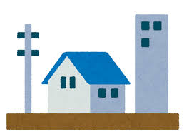
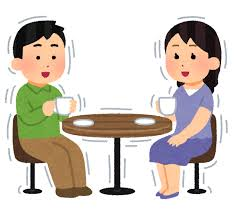
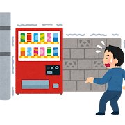
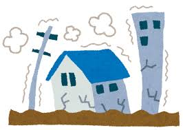
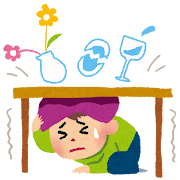
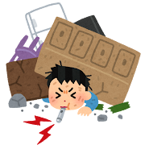

🌐 Terremotos
Shindo / 震度 es una escala japonesa de intensidad sísmica que indica
el nivel de un terremoto en un lugar específico.
Es diferente de la magnitud, que mide la energía liberada del sismo.
En Japón, las noticias suelen usar Shindo (intensidad) en lugar de la magnitud.
-

📊 Percepción
Apenas perceptible
📅 Frecuencia
Casi todos los días, en algún lugar de Japón
👉 Probabilidad
Es posible que lo experimentes varias veces durante tu viaje
🗣️ ¿Cómo lo interpretamos en Japón?
"¿Acaba de temblar? Bueno, nada importante."
✅ ¿Qué debes hacer?
Nada especial, la vida continúa
❌ ¿Qué no debes hacer?
No preocuparte
-

📊 Percepción
Se siente claramente. Las lámparas colgantes y las cortinas se mueven lentamente
📅 Frecuencia
Varias veces al mes, en algún lugar de Japón
👉 Probabilidad
Si te quedas por un periodo largo, es bastante normal experimentarlo
🗣️ ¿Cómo lo interpretamos en Japón?
"Oh, sí, está temblando." *Mira el móvil para confirmar la magnitud*
✅ ¿Qué debes hacer?
Mantener la calma y alejarte de objetos que se puedan caer
Alejarte de edificios, postes y árboles
❌ ¿Qué no debes hacer?
No salir corriendo sin mirar
-

📊 Percepción
El movimiento es fuerte y continuo
📅 Frecuencia
Unas pocas veces al año
👉 Probabilidad
Si tu estancia es larga, puede que lo experimentes alguna vez
🗣️ ¿Cómo lo interpretamos en Japón?
"Esto da un poco de miedo."
✅ ¿Qué debes hacer?
Protegerte bajo una mesa resistente y alejarte de ventanas
Si estás al aire libre: buscar un espacio abierto.
❌ ¿Qué no debes hacer?
No usar ascensores
-

📊 Percepción
Los muebles pesados se pueden mover
📅 Frecuencia
Cada varios años, en alguna región. El autor tiene casi 30 años y solo lo ha experimentado una vez.
👉 Probabilidad
Encontrarte con uno durante tu estancia sería bastante raro
🗣️ ¿Cómo lo interpretamos en Japón?
"Esto es realmente peligroso."
✅ ¿Qué debes hacer?
Protégete inmediatamente bajo una mesa resistente o escritorio.
Aléjate de ventanas, estanterías y objetos que se puedan caer.
Prepárate para las réplicas.
Mantén la calma y evalúa la situación antes de moverte.
❌ ¿Qué no debes hacer?
No evacuar mientras el suelo esté temblando.
No salir corriendo como en las películas.
No salir corriendo sin mirar alrededor.
No acercarte a ventanas ni a objetos que se puedan caer.
-

📊 Percepción
Daños graves. Edificios antiguos pueden colapsar
Generalmente hay daños graves y heridos
📅 Frecuencia
Pocas veces por década, a nivel nacional
👉 Probabilidad
Incluso la mayoría de los japoneses nunca lo experimentan
🗣️ ¿Cómo lo interpretamos en Japón?
"Mi vida puede estar en peligro."
✅ ¿Qué debes hacer?
Básicamente, es lo mismo que Shindo 5.
❌ ¿Qué no debes hacer?
Básicamente, es lo mismo que Shindo 5. Y olvídate de TikTok, Instagram y YouTube por ahora: tu vida es más importante que los likes
-

📊 Percepción
Terremoto catastrófico. Sería noticia mundial
📅 Frecuencia
Una vez cada varias décadas
👉 Probabilidad
No hace falta considerarlo como algo probable, pero conviene saber que existe. Si llegas a experimentarlo, has tenido muy, muy mala suerte
🗣️ ¿Cómo lo interpretamos en Japón?
"Esto quedará en la historia."
✅ ¿Qué debes hacer?
La supervivencia es la prioridad absoluta
❌ ¿Qué no debes hacer?
No grabar, no dudar, no subestimar
🌊 Tsunami
Si estás cerca de la costa, después de un terremoto debes estar alerta ante un tsunami.
Normalmente se activan sirenas y alertas oficiales.
Sigue siempre las instrucciones de las autoridades.
- Aléjate inmediatamente del mar y dirígete a zonas altas.
- Es importante abandonar el coche y evacuar a pie si es necesario.
- No esperar a ver la ola.
- Aléjate de ríos y zonas bajas.
❌ ¿Qué no debes hacer?
- No observar el tsunami desde la playa
- No ignorar las alertas oficiales
⚠️ Los "grandes terremotos" que todos esperan (pero nadie quiere)
Si pasas tiempo en Japón, probablemente escucharás hablar de dos terremotos que "van a ocurrir algún día":
el Terremoto Metropolitano de Tokio (首都直下地震) y el Terremoto de Nankai Trough (南海トラフ地震).
¿Por qué todo el mundo habla de esto?
Porque los científicos japoneses han calculado que hay una probabilidad del 70-80% de que ocurran en los próximos 30 años.
Es como vivir con una cita pendiente que sabes que llegará, pero no sabes cuándo.
🏙️ Terremoto Metropolitano de Tokio
- • Zona afectada: Tokio y áreas circundantes
- • Magnitud esperada: 7.0 o superior (Shindo 6-7 en áreas costeras, sí, tan grande como el de 2011)
- • Lo que significa: Un terremoto importante debajo de la ciudad más poblada del mundo. Sí, suena como película de desastres
- • Dato curioso: El gobierno japonés tiene planes de evacuación, rutas de escape, y simulacros regulares. Están tan preparados como se puede estar para algo impredecible
🌊 Terremoto de Nankai Trough
- • Zona afectada: Toda la costa del Pacífico, desde Tokio hasta Kyushu
- • Magnitud esperada: 8.0-9.0 (Shindo 6-7 en el epicentro)
- • Lo que significa: No solo habrá un terremoto masivo, sino también tsunamis gigantes en toda la costa del Pacífico
- • Dato importante: Después del terremoto de 2011, Japón invirtió billones de yenes en muros anti-tsunami y sistemas de alerta temprana. No es broma
💭 ¿Debería preocuparme como visitante?
Respuesta corta: No más de lo normal.
Respuesta larga: "70% en 30 años" no significa que vaya a ocurrir mañana (o durante tu viaje de dos semanas).
Es una probabilidad estadística a largo plazo. Piénsalo así: millones de turistas visitan Japón cada año sin experimentar ningún terremoto grave.
Los japoneses viven sus vidas normalmente sabiendo esto. Trabajan, estudian, se casan, tienen hijos, todo mientras saben que "algún día" llegará el grande.
Es parte de la vida aquí. Shikata ga nai (しかたがない) – "No se puede evitar" – es una filosofía muy japonesa.
En resumen: Sí, Japón espera grandes terremotos, pero no, no deberías cancelar tu viaje por eso.
Solo mantén la calma, conoce las rutas de evacuación de tu hotel, y recuerda que estás en uno de los países mejor preparados del mundo para esto.